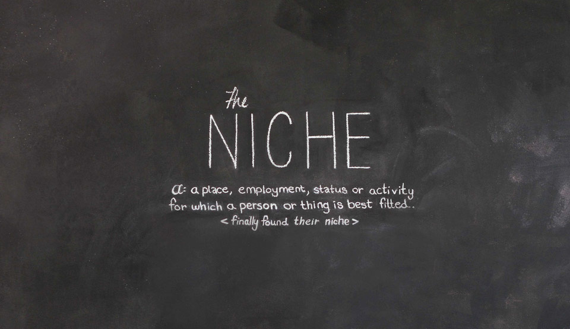
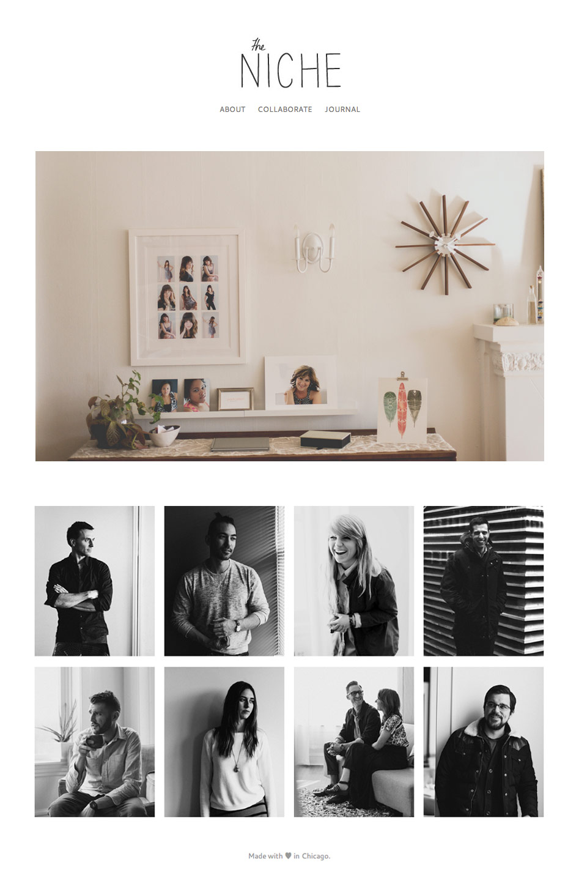
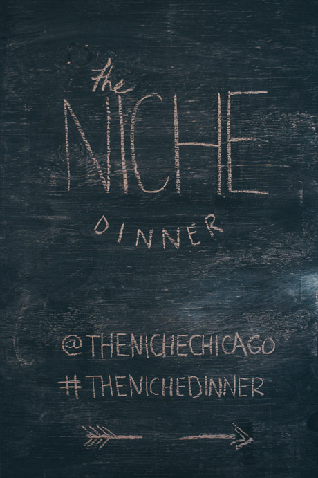
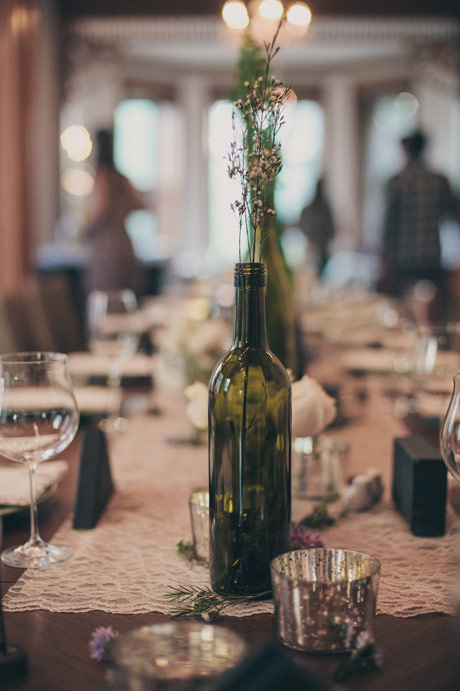
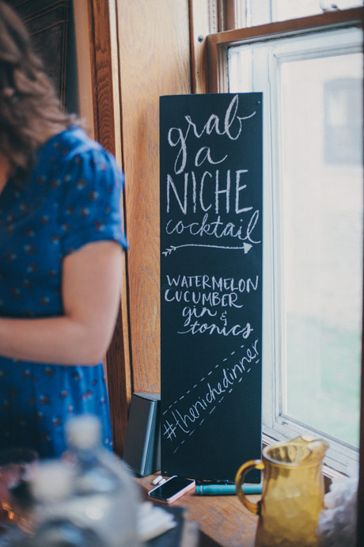
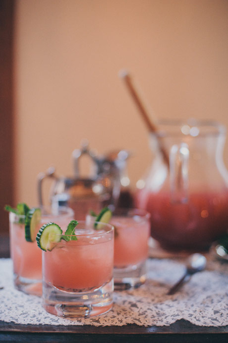

The Niche is an online publication that showcases Chicago's talented designers and makers who have found their niche.
I worked on the front-end design for the to site. We wanted it to be as clean as possible. We choose 8 creatives for the initial launch. The features include an interview and photography capturing them in their enviornments.
We also hosted a dinner for the first 8 creatives. Put on by our own Kara Dykert and Events by Willow. It was one thing to feature great talent in Chicago, but even better when you can get them all in the same room with each other.
   